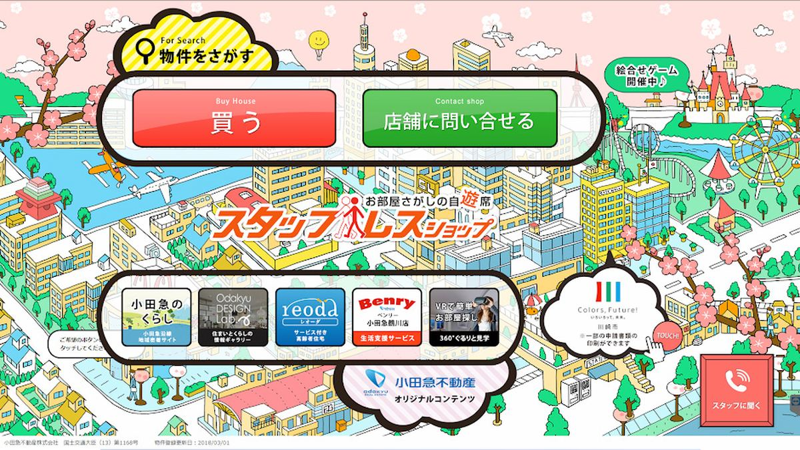
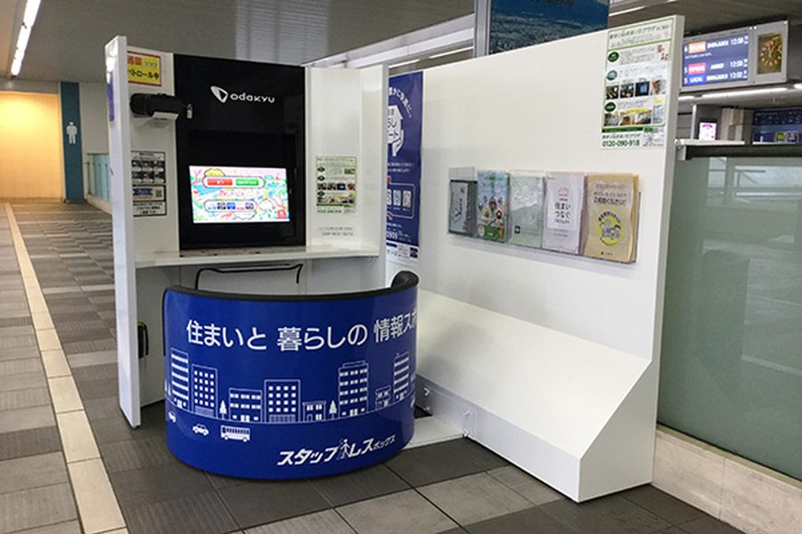
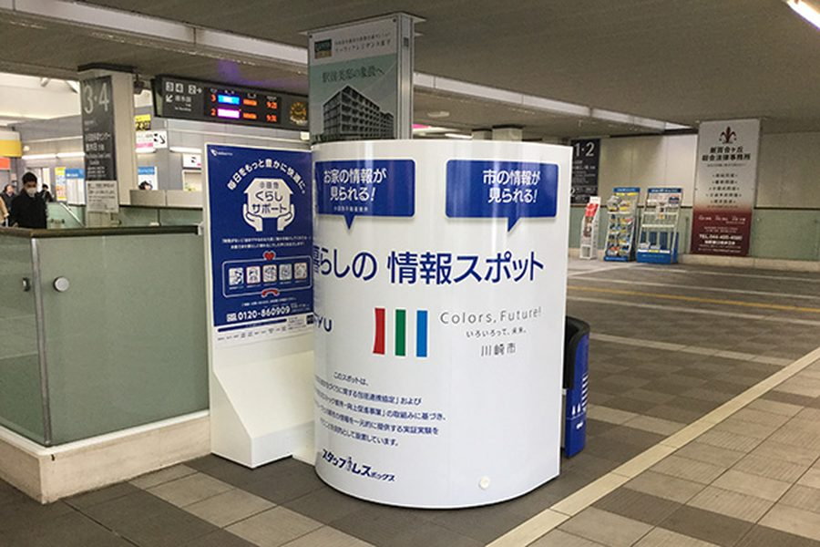

新百合ヶ丘駅構内に「住まいと暮らしの情報スポット」開設

2018年3月、小田急線「新百合ヶ丘駅」構内に、無人情報端末「住まいと暮らしの情報スポット」を開設しました。
本スポットは、小田急電鉄株式会社、小田急不動産株式会社、川崎市による共同事業として、住宅情報、行政情報、地域情報を一元的に提供する実証実験として実施したものです。
タッチパネルによる住宅情報検索や、VRゴーグルを使用した室内内見、川崎市の一部申請書類の取得、地域情報の紹介などを通じて、駅を利用する方々が住まいと暮らしに関する情報に気軽に触れられる場をつくりました。
小田急グループと川崎市では、包括連携協定や住宅ストック維持・向上促進事業を通じて、空き家・住宅ストックの利活用や子育て世代の流入促進に向けた取組みを進めており、本スポットは、その活動の一環として開設されました。
駅構内という日常的な場所を活用した本取組みは、地域住民との新たな接点をつくり、住生活ニーズの検証や今後のサービス開発につなげるための、協議会初期の実証的な取組みのひとつです。

